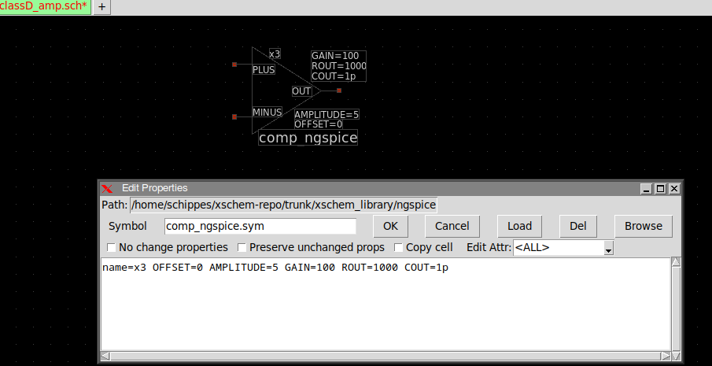

CREATING A PARAMETRIC SUBCIRCUIT
Let's suppose we want to design an OPAMP macromodel taking the following parameters:
- GAIN: The differential maximum small signal gain of the opamp.
- AMPLITUDE: The peak to peak swing of the opamp output.
- OFFSET: the offset of the output when input differential signal is zero.
For example giving AMPLITUDE=10 and OFFSET=5 will result in an output swing from 0 to +10V. - ROUT: the output resistance.
- COUT: the output capacitance. Together with ROUT defines a RC time constant (dominant pole).
Parameters and expressions should be enclosed in curly braces or single quotes:
value={ROUT} or value='ROUT'
The image below shows the circuit. A 'B' voltage-type source with an hyperbolic tangent function is used because it has continuous derivative and a realistic shape.

after drawing the schematic a symbol is created. The easiest way is to press the 'a' key in the
schematic to automatically create the symbol, then descend into the symbol and do some artwork to
reshape it to represent an opamp.
After reshaping the symbol edit its global attributes and add handling of subcircuit parameters
in the format and template attributes as shown below:
the symbol has the following global attributes:
type=subcircuit format="@name @pinlist @symname OFFSET=@OFFSET AMPLITUDE=@AMPLITUDE GAIN=@GAIN ROUT=@ROUT COUT=@COUT" template="name=x1 OFFSET=0 AMPLITUDE=5 GAIN=100 ROUT=1000 COUT=1p"
The format string defines how the instantiation will look in the spice netlist, The following is the resulting spice netlist line and how it is generated from the format string:
x1 REFD DRIVED IN comp_ngspice OFFSET=5 AMPLITUDE=10 GAIN=100 ROUT=1000 COUT=1p
-- -------------- ------------ -------- ------------ -------- --------- -------
| | | | | | | |
| | | | | | | COUT=@COUT
| | | | | | ROUT=@ROUT
| | | | | GAIN=@GAIN
| | | | |
| | | | AMPLITUDE=@AMPLITUDE
| | | |
| | | OFFSET=@OFFSET
| | @symname
| |
| @pinlist
@name
The template string defines initial values for these parameters when you first instantiate this component:
template="name=x1 OFFSET=0 AMPLITUDE=5 GAIN=100 ROUT=1000 COUT=1p"
As you can see in above image the placed component has instance parameters set to the same values listed in the template string. You may then change these values according yo your needs. The values set in the instance affect that specific component instance behavior. Multiple instances can be placed, each with it's own set of parameter values. As you can see the @param values in the format string are replaced with the actual value set in the instance attributes.
When a netlist is generated the following lines are generated regarding this comp_ngspice symbol:
* sch_path: /home/schippes/xschem-repo/trunk/xschem_library/examples/classD_amp.sch
...
... other components ....
...
x1 REFD DRIVED IN comp_ngspice OFFSET=5 AMPLITUDE=10 GAIN=100 ROUT=1000 COUT=1p
...
...
* expanding symbol: comp_ngspice.sym # of pins=3
** sym_path: /home/schippes/xschem-repo/trunk/xschem_library/ngspice/comp_ngspice.sym
** sch_path: /home/schippes/xschem-repo/trunk/xschem_library/ngspice/comp_ngspice.sch
.subckt comp_ngspice PLUS OUT MINUS OFFSET=0 AMPLITUDE=5 GAIN=100 ROUT=1000 COUT=1p
*.ipin PLUS
*.ipin MINUS
*.opin OUT
B1 IOUT 0 V = {OFFSET + AMPLITUDE/2*(tanh(V(IPLUS,IMINUS)*GAIN*2/AMPLITUDE))}
R1 OUT IOUT {ROUT} m=1
C3 OUT 0 {COUT} m=1
V1 IPLUS PLUS 0
.save i(v1)
V2 IMINUS MINUS 0
.save i(v2)
.ends
...
...
.end
You see the .subckt line contains the subcircuit parameters and their values: The values present in the .subckt line are overridden by instance attribute values if given.
.subckt comp_ngspice PLUS OUT MINUS OFFSET=0 AMPLITUDE=5 GAIN=100 ROUT=1000 COUT=1p
------------ -------------- -----------------------------------------------
| | |
| | |
| | parameters from template attributes:
| | |
| | _______________________________________________
| | template="name=x1 OFFSET=0 AMPLITUDE=5 GAIN=100 ROUT=1000 COUT=1p"
| port list
symbol name